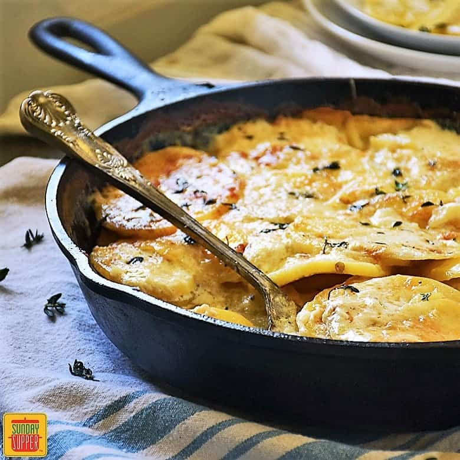

Scalloped Potatoes

Description
Best potatoes and cheese food
Ingredients
- 4 tablespoons unsalted butter
- .25 cup all purpose flour
- 2 cups whole milk
- 1 cup vegtable broth
- 4 garlic cloves, grated
- 1 tablespoon fresh thyme leaves, chopped
- 2 teaspoons sea salt
- .5 teaspoon freshly ground black pepper
- 3 pounds Yukon gold potatoes, sliced 1/8-inch thick
- .5 medium yellow onion, thinly sliced
- 1.5 cups grated cheddar cheese
Steps
- Preheat the oven to 400°F and grease a 9x13-inch baking dish.
- In a medium skillet, melt the butter over medium heat. Add the flour and whisk for 1 minute, then slowly add the milk followed by the vegetable broth, whisking continuously. Add the garlic, thyme, salt, and pepper and cook, whisking often, for 2 to 3 minutes, or until the sauce lightly coats the back of a spoon. Remove from the heat.
- Layer half of the potatoes at the bottom of the prepared baking dish. Top with half the onion, then half the sauce and 1 cup of the cheese. Repeat the layers with the remaining potatoes, onion, sauce, and ½ cup cheese.
- Cover and bake for 30 minutes, then uncover and bake for 35 to 40 minutes, or until the potatoes are tender and the cheese on top is browned. Let stand at room temperature for 20 minutes before serving.
Home